Text Mining
or how to Read Lots of Texts with no Time
University of Tartu | Polish Academy of Sciences
2026-02-04
text mining – why bother?
Motivation
- Information retrieval:
- How to “read” a big collection of documents, e.g. an archive?
- How to get relevant websites using search engines?
- How to fine-grain the results for ‘apple’ (1. a fruit, 2. a company)
- Linguistics:
- What is the underlying model for defining word meaning?
distributional semantics
Meaning defined by the context
The meaning of words lies in their use.
(Wittgenstein 1953: 80, 109)
You shall know a word by the company it keeps.
(Firth 1962: 11)
Distributional semantics
- A set of methods that make no assumption as to words’ relations and/or functions
- Meaning of the words is inferred from their:
- Frequency
- Context
- These methods include:
- Keyword analysis
- Collocations
- Topic modeling
- Word embeddings
keywords analysis
Keywords in information extraction
- Extracting the contents, by identifying the most meaningful words
- The goal is to compare a text against a corpus
- Keyword = a word significantly more frequent in a given text
Emily Bronte, The Wuthering Heights
heathcliff, linton, catherine, hareton, earnshaw, cathy, edgar, ellen, heights, hindley, nelly, ll, grange, i, wuthering, t, joseph, isabella, master, gimmerton, zillah, m, exclaimed, he, thrushcross, and, answered, yah, kenneth, ve, maister, lockwood, kitchen, you, dean, moors, replied, cried, him, muttered, lintons, papa, she, till, commenced, on, wer, ech, shoo, leant, hearth, bonny, door, stairs, hell, me, crags, moor, wouldn, fiend, settle, jabez, penistone, fire, ye, its, bid, nowt, naught, yer, hush, mistress, grew, lad, compelled, minny, won, hisseln, skulker, soa, wisht, cousin, lattice, didn, yon, minute, lass, needn, inquired, snow, branderham, flaysome, gooid, sud, thear, affirming, interrupted, couldn, window, …
A simple idea…
I have just returned from a visit to my landlord – the solitary neighbour that I shall be troubled with.
neighbour solitary troubled landlord visit returned just shall from I have be with my that a to the

collocations
Collocations in corpus linguistics
- A collocation is a pair of words that co-occur more often than would be expected by chance.
- Typical collocations are idioms, as hot potato, and phrasal verbs.
- Word frequencies used to calculate co-occurence probabilities.
Word frequencies as probabilities
- Probability of finding a word A in a corpus is \(P(A)\)
- Probability of finding a word B in a corpus is \(P(B)\)
- Probability of finding them together is \(P(A) \times P(B)\)
An example: \[ P(A) = 0.001 \quad\quad P(B) = 0.002 \quad\quad P(A) \times P(B) = 0.000002 \]
Collocations in corpus linguistics
- However, some words tend to ‘like’ each other…
- … despite their theoretical probabilities.
- Cf.:
strong tea — *powerful tea
powerful computer — *strong computer
topic modeling
What’s the aim?
- To discover hidden thematic structure in large collections of texts…
- … without any prior knowledge about word meanings or grammar.
Assumptions
- Certain words tend to occur more frequently in a text covering a given topic than in other texts.
- Texts are usually about many topics.
- A topic is a recurring pattern of co-occurring words.
What is a topic?
We formally define a topic to be a distribution over a fixed vocabulary. For example, the genetics topic has words about genetics with high probability and the evolutionary biology topic has words about evolutionary biology with high probability.
(Blei 2012, 78)

Latent Dirichlet Allocation (LDA)
- Each topic is a distribution over words
- Each document is a mixture of corpus-wide topics
- Each word is drawn from one of those topics
Latent Dirichlet Allocation (LDA)
- in reality, we only observe the documents
- the other structure are hidden variables
- the goal is to infer the hidden variables

Assumptions (cont.)
- The order of words is not relevant (“bag of words”)
- The order of documents is not relevant
- The number of topics is fixed and known in advance
A topic (50 top words)
fight soldier arms war soldiers field fly sword horse valiant march battle brave messenger arm army trumpet valour kings camp alarum walls join wars slain tent forces gates drum courage trumpets lion town fought foes english armour city saint guard colours victory herald swords fame armed country wounds plain safe …

Shakespeare
Topics in the Shakespearean canon
- a corpus of 42 texts by Shakespeare…
- … sliced into samples of 1000 words each
- topic model inferred:
- LDA algorithm
- 25 topics
- excluded speakers’ names
- excluded common stop words
- topics visualized using wordclouds
Fights & swords (topic 6)
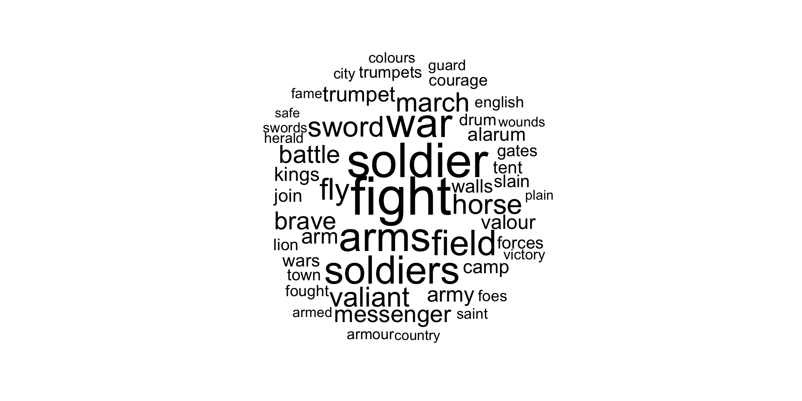Family relations (topic 21)
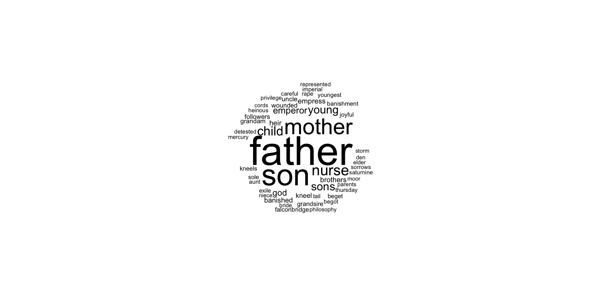Tears & sorrow (topic 24)
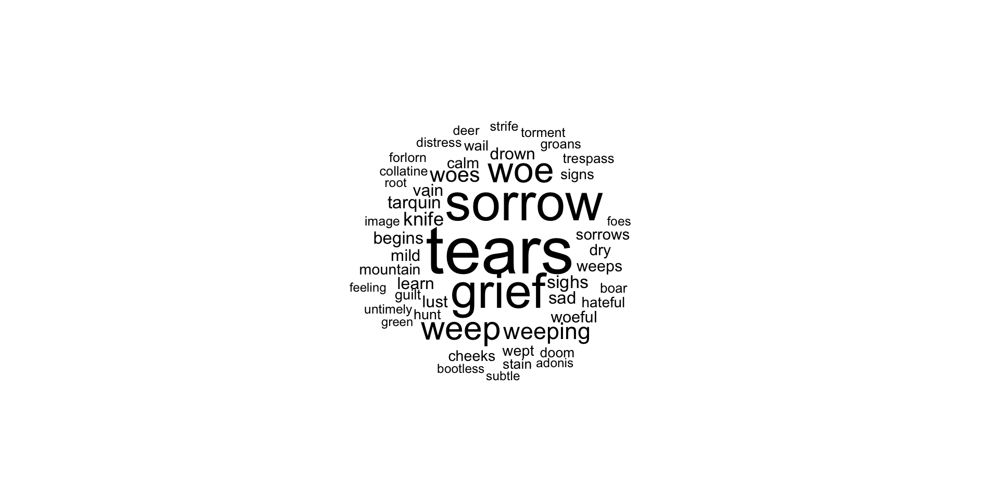Night & sleep (topic 23)
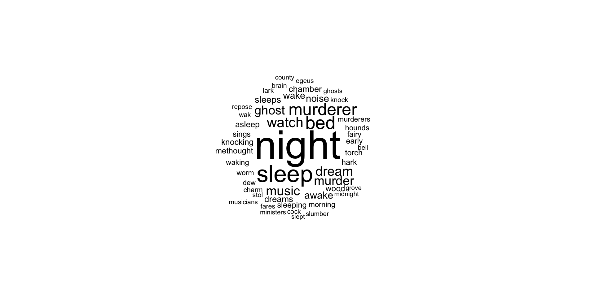Face & kisses (topic 8)
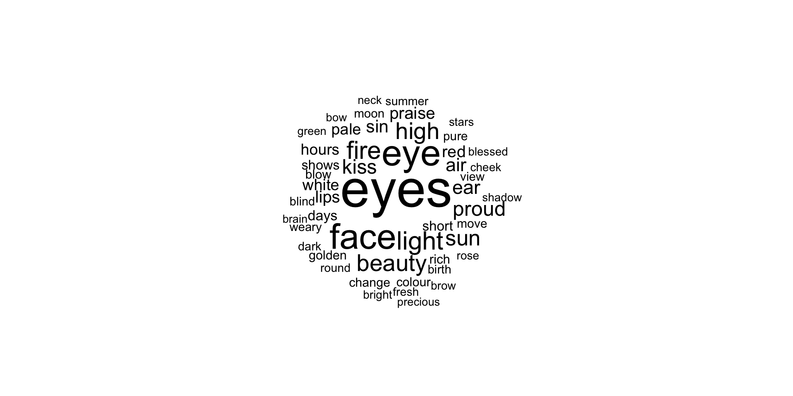Love (topic 5)

The elements (topic 10)
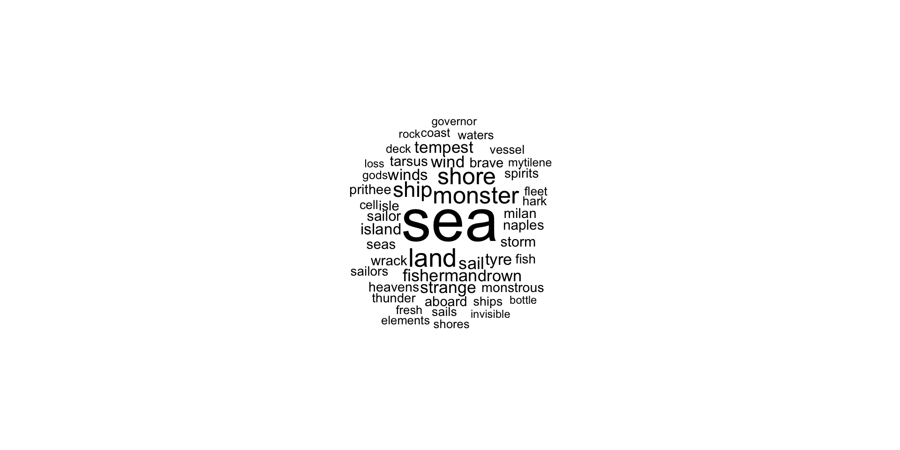People? (topic 15)
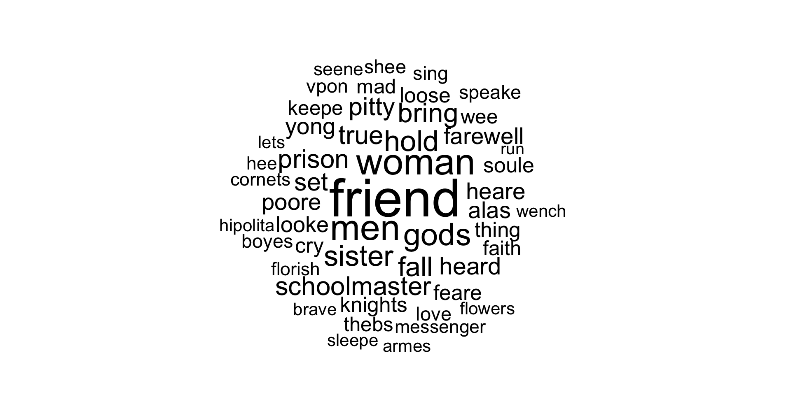A mixture of everything? (topic 17)
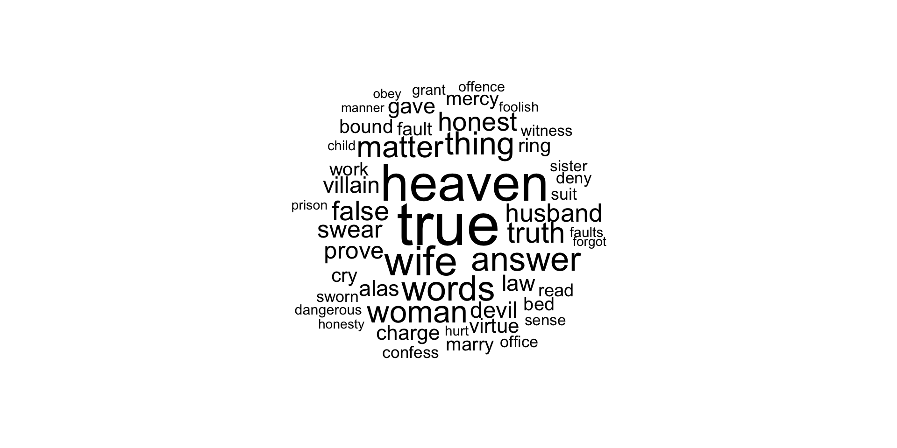How to interpret topics?
Indeed calling these models “topic models” is retrospective – the topics that emerge from the inference algorithm are interpretable for almost any collection that is analyzed. The fact that these look like topics has to do with the statistical structure of observed language and how it interacts with the specific probabilistic assumptions of LDA.
(Blei 2012, 79)
Topics in documents
- Each document contains (many) topics.
- The proportions of these topics can be plotted.
The climax of Romeo and Juliet
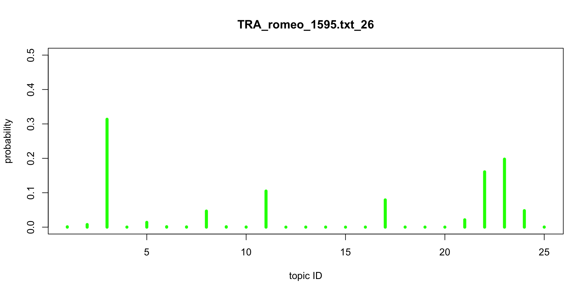The beginnig of The Tempest
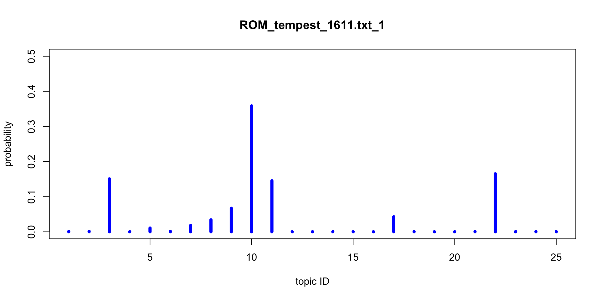A Midsummer Night’s Dream
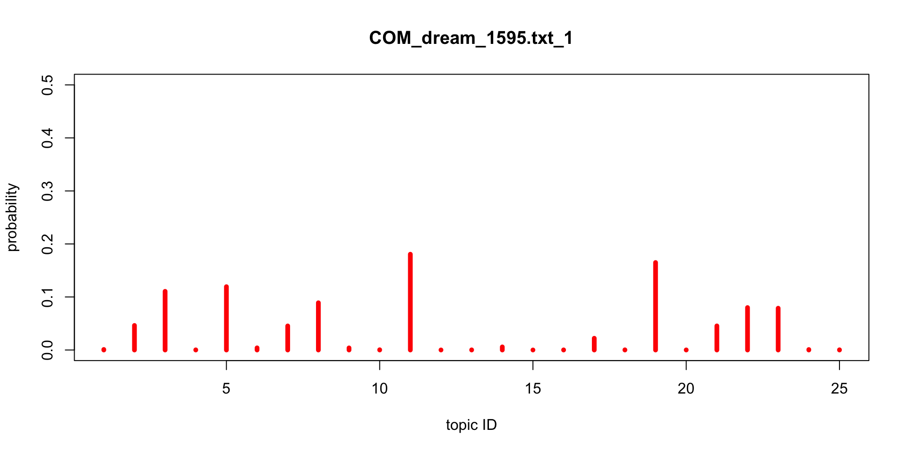topics & genres
Topics vs. genres
- Proportions of topics can be used as features in machine learning.
- Will the topic structure corroborate the traditional division into Shakespearean genres?
- red: comedies
- orange: tragedies
- green: histories
- black: romances
- blue: poetry
Topics vs. genres – cluster analysis
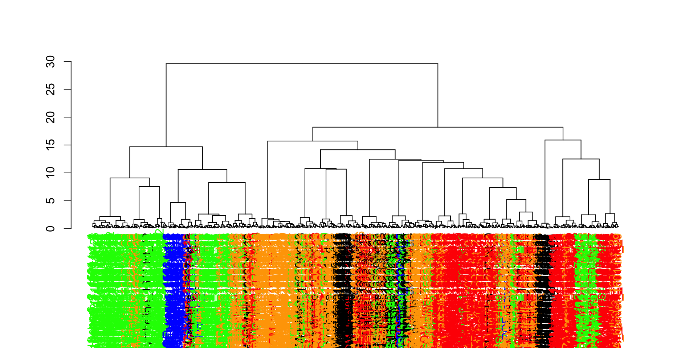Topics vs. genres – PCA
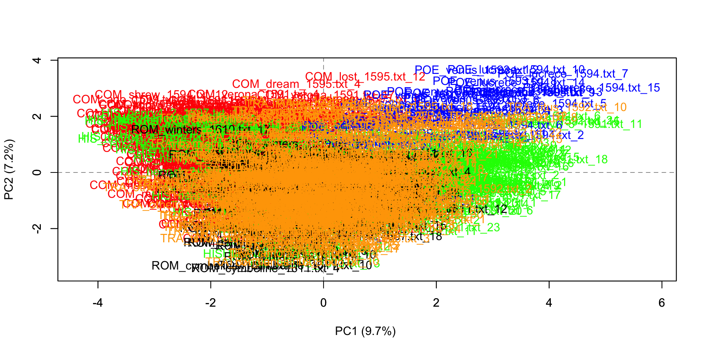Topics vs. genres – PCA
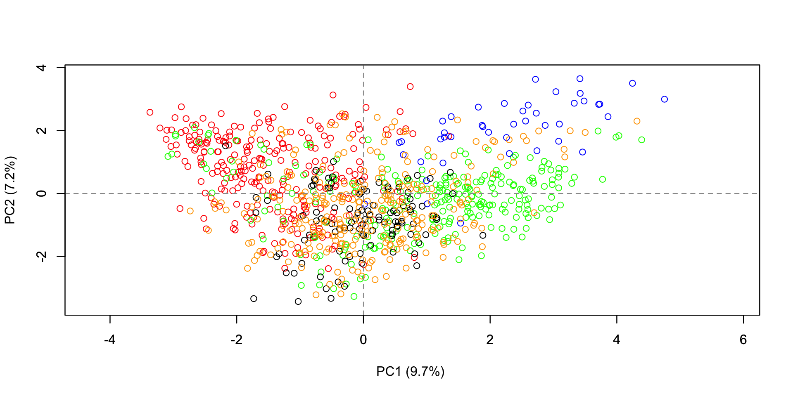Topics vs. genres

Titus Andronicus

The Tempest

Hamlet

topics over time
Topics in “Teksty Drugie”
- main Polish journal on literary theory
- founded in the 70’s under the title Teksty (The Texts)
- banned by the communist government in 1981
- re-established in the 90’s as Teksty Drugie (The Second Texts)
- digitized version available
How did the topics change over time?
- texts lemmatized
- stopwords removed
- proper nouns (= NER) removed
- 120 topics inferred
- topics labelled manually
Increasing patterns
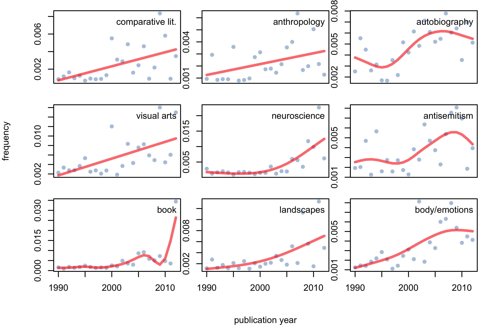Decreasing patterns
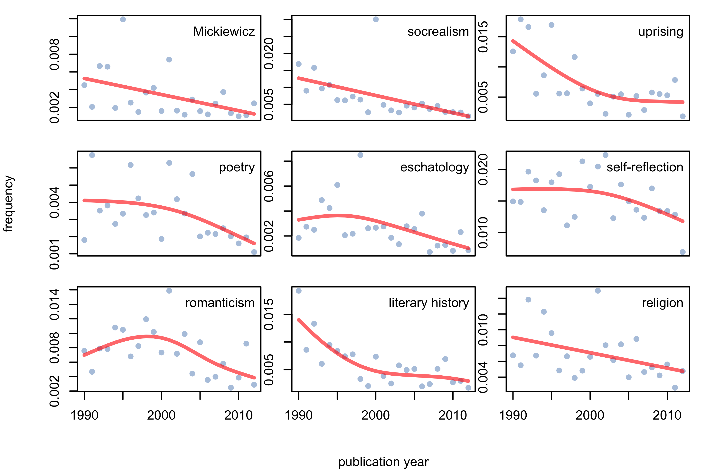U-shaped patterns
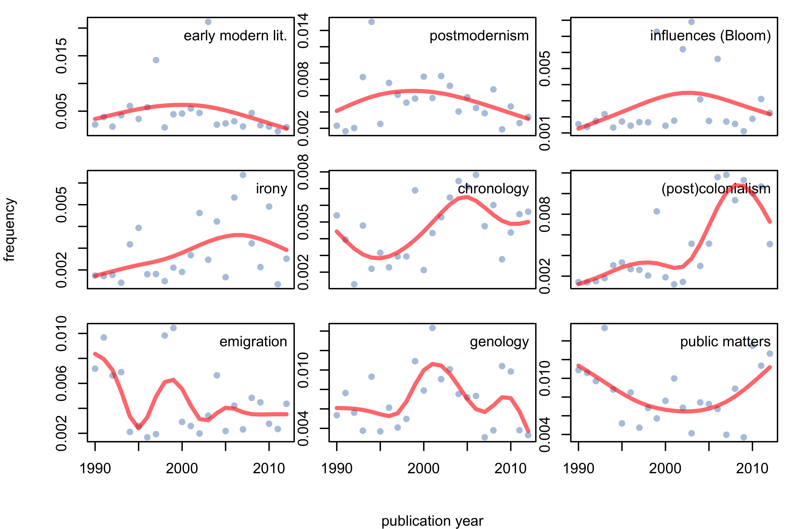No clear trend
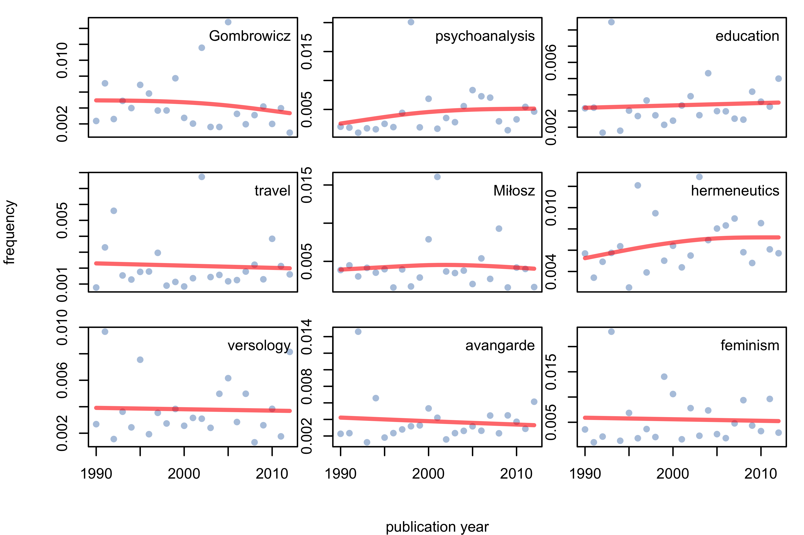trivia
Implementations
- Mallet (Java)
- Stanford Topic Modeling Toolbox (Java)
- gensim (Python)
- lda (Python)
- topicmodels (R)
- Mallet invoked from R (R + Java)
- DARIAH Topic Explorer (standalone)